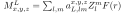
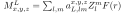
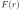

Next: External module function dorbmomdensity_coeff1 Up: Module Functions for Observables Previous: External module function dspindensity_coeff1 Contents Index
In order to calculate orbital moment densities the following function has to be present in the module file *.so:
extern "C" void orbmomdensity_coeff(Vector &aLlm, int & xyz, double *T,Vector &Hxc, Vector & Hext,double *gJ,Vector &MODPAR,char **sipffilename,ComplexMatrix & Icalc_parstorage);
Note for windows users with MINGW the declaration should be extern "C" __declspec(dllexport) void orbmomdensity_coeff(...).
The meaning of the symbols is as follows:
on input
xyz direction index 1,2,3 = x,y,z (component for the spindensity vector to be calculated)
T temperature[K]
Hxc vector of exchange field [meV] (can be n-dimensional, for a set of n operators)
Hext external magnetic field [T]
gJ Lande factor
MODPAR Vector with Parameters read in single ion property file
sipffilename file name of the single ion parameter file
Icalc_parstorage parameter matrix (initialized by Icalc_parameter_storage_matrix_init)
it should/may contain any information, e.g. population numbers of the
states (imaginary part of row 0)
and eigenvalues (real part of row 0) with values set by the most recent call
for this ion (use of this matrix is optional)
on output
aLlm Output single ion moments =expectation values of
coefficients of Zlm F(r) at a given temperature T and
effective field H
The module function must perform the following tasks:
 in the expansion of
the orbital moment
density vector

The output Vector alm(1,...,49) should contain
in the expansion of
the orbital moment
density vector

The output Vector alm(1,...,49) should contain
 in the following order (lm): 00,1-1, 10,11, 2-2, 2-1,20,21,22, 3-3, 3-2, ...,65,66
in the following order (lm): 00,1-1, 10,11, 2-2, 2-1,20,21,22, 3-3, 3-2, ...,65,66
 all quantities should be evaluated assuming that all Boltzmann probabilities
all quantities should be evaluated assuming that all Boltzmann probabilities  are zero except for the state number
are zero except for the state number  , for which the probability
, for which the probability  .
.
Note the definition of  in terms of the radial wave function  is
is